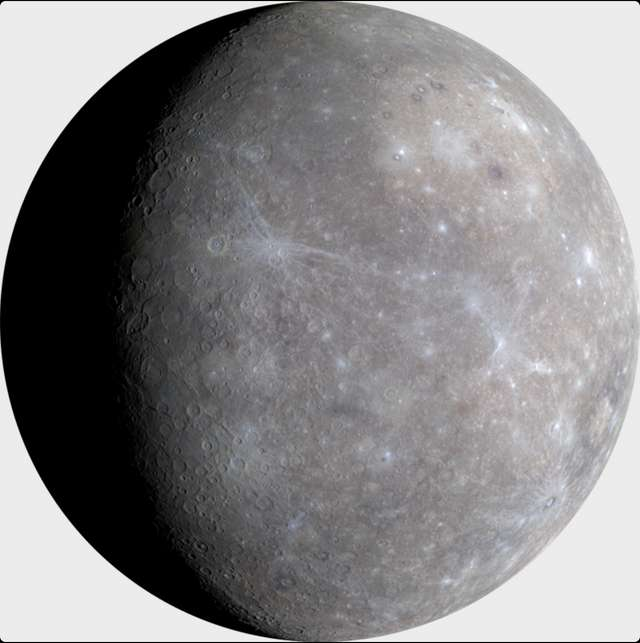
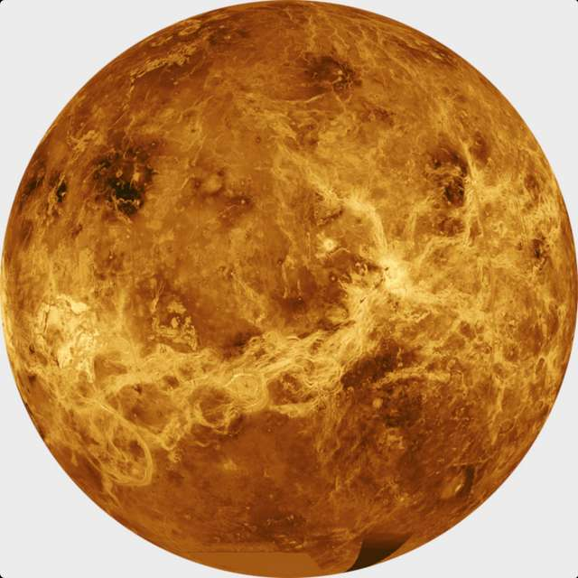
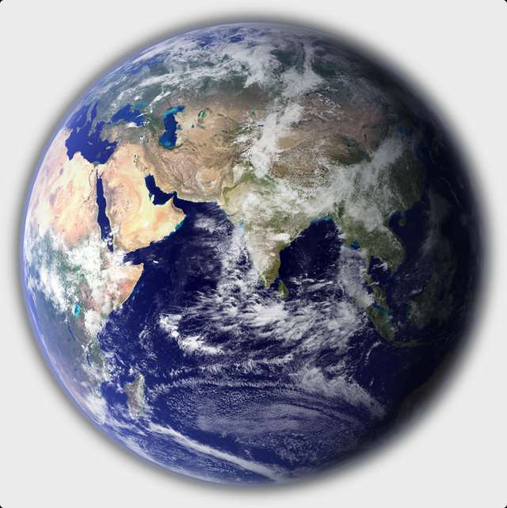
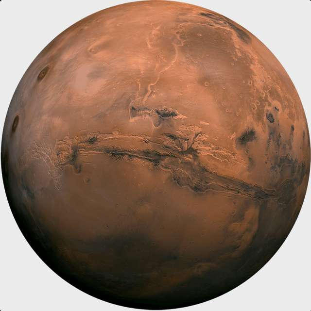
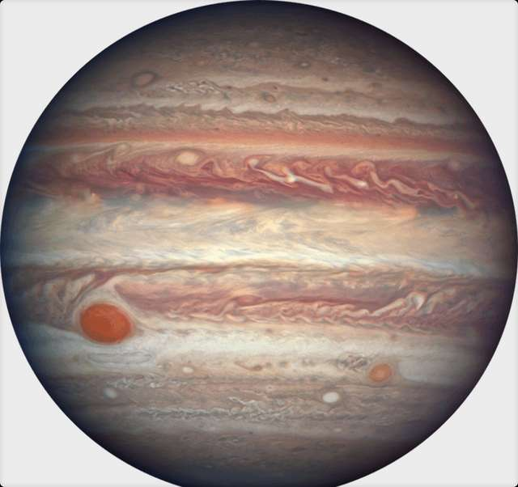
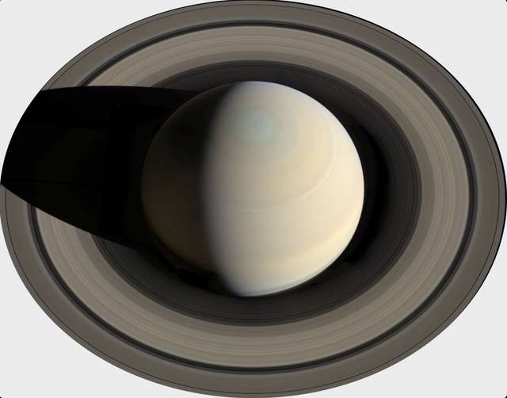
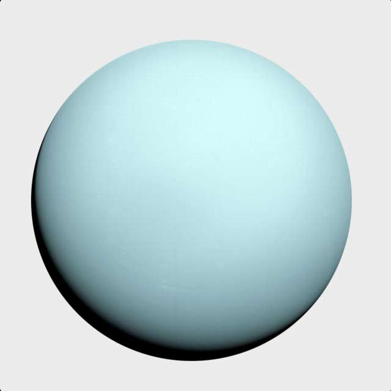
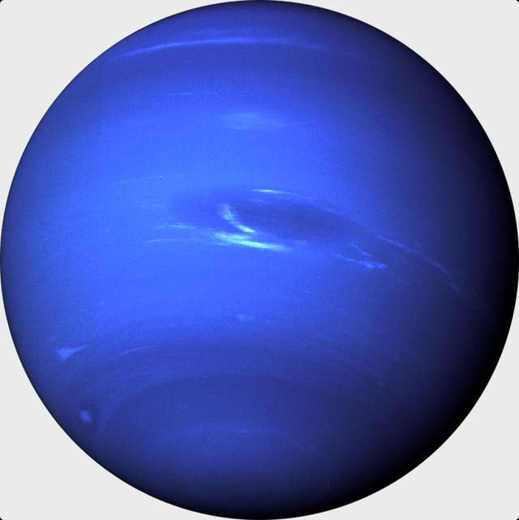

Характеристика кожної планети Сонячної системи
Меркурій

Меркурій– найменша планета Сонячної системи, яка має радіус всього 2440 км. Планета розташована між Сонцем і Венерою.
Період обертання навколо Сонця дорівнює 88 земним дням, а оберт навколо власної осі Меркурій встигає зробити всього півтора раза. Тож доба триває 59 земних днів. Орбіта Меркурія – одна з найбільш нестабільних, змінюється не тільки швидкість переміщення і його віддаленість від Сонця, а й саме положення.
Близькість до Сонця стала причиною того, що Меркурій схильний до найбільших перепадів температури серед планет Сонячної системи. Середня денна температура становить близько 350°C, а нічна – -170°C. В атмосфері виявлено натрій, кисень, гелій, калій, водень і аргон.
Венера

Венеру часто називають Ранковою зіркою і Вечірньою зіркою, тому що вона першою з зірок, яку видно після заходу і перед світанком.
Атмосфера планети майже повністю складається з вуглекислого газу. Відсоток діоксиду вуглецю становить в атмосфері 96%, азоту в ній порівняно небагато – майже 4% і в зовсім незначній кількості присутній водяна пара та кисень.
Така атмосфера створює ефект парника, тож температура на поверхні досягає 475°C. Доба триває 243 земних дні, що майже дорівнює року на Венері – 225 земних днів.
Багато хто називає її сестрою Землі через масу і радіус, які схожі до земних показників. Радіус Венери становить 6052 км (0,85% земного). Супутників немає.
Земля

Земля єдина планета в Сонячній системі, де на поверхні є рідка вода, без якої не розвинулося б життя на планеті. Радіус Землі – 6371 км й понад 70% поверхні вкрито водою. Інший простір займають материки.
Планета захищена від зоряної радіації потужним магнітним полем, сформованим активним ядром (це розплавлене залізо).
Один оберт навколо своєї осі – 24 години, а повне проходження по орбіті триває 365 діб. Земну добу і рік також прийняті як еталон, але зроблено це лише для зручності сприйняття часових відрізків на інших планетах.
У Землі є один природний супутник – Місяць.
https://maximum.fm/novini_t2
Марс

Червона планета розташована між Землею і Юпітером. Відстань від Марса до Сонця в середньому становить понад 227 млн км (але через еліптичну орбіту, по якій обертається Марс, відстань змінюється від 206,6 до 249,2 млн км). Один рік на Марсі триває 687 земних днів, але кількість годин на добу 24,6.
Марс – невелика планета, майже у два рази менша за Землю, а маса становить лише 10,7% маси Землі. Поверхня Марса має площу 144,3 млн км² і приблизно дорівнює площі земної суші, не покритій океанами. Супутники – Фобос і Деймос.
Середня температура становить близько мінус 60 градусів Цельсія. Температура змінюється в залежності від сезону, але якщо марсіанське літо нагадує земне з середньою температурою від +20 днем на екваторі, то зими – суворі з морозами в -125 на полюсах.
Пилові бурі на Червоній планеті – найпотужніші в Сонячній системі, вони можуть тривати місяцями та охоплювати всю планету. Через те, що гравітація на планеті становить лише близько третини земної, людина з вагою в 60 кг на Марсі буде важити лише 22,2 кг.
Юпітер

П'ята планета від Сонця розташована між Марсом і Сатурном. Віддалена від Сонця на 778,5 мільйонів кілометрів. Юпітер – газовий гігант, найбільша планета в Сонячній системі. Доба на Юпітері триває майже 10 годин, а рік – 4333 земних днів, тобто 11,8 року. Маса планети в 317 разів перевищує земну і становить 71% маси всіх планет Сонячної системи.
У планети є 67 супутників, а 4 з них, відкриті в 1610 році Галілео Галілеєм, викликають підвищений інтерес вчених: Іо, Європа, Ганімед і Каллісто.
Тришарова атмосфера Юпітера складається на 9/10 з водню і на 1/10 з гелію. Температура на поверхні становить близько -150°C, на глибині 150 км – +150°C, ближче до центру підвищується до ~ 6000°C.
Парадокс, але температура в місцях на поверхні планети, куди падають тіні від супутників вище, ніж на освітленій частині. У Юпітера є кільця як і у Сатурна, проте їх товщина значно менше і вони майже не помітні.
Сатурн

Сатурн – друга за розмірами планета у порівнянні з іншими планетами й найбільш схожа на Сонце за складом хімічних елементів. Радіус поверхні – 57350 км, рік становить 10 759 діб (майже 30 земних років). Доба – 10,5 земних годин.
До складу атмосфери входять: CH4, H2, He, NH3. Ядро розпечене до 11700°C і виробляє більше тепла, ніж планета отримує від Сонця. Чим вище підійматися, тим нижче падає температура. На верхівці температура утримується на позначці в -180°C і 0°C на глибині в 350 км.
Кількість супутників – 62. Найбільшим супутником Сатурна є Титан. Трохи менші за розміром – Енцелад, Рея, Діона, Тефия, Япет і Мимас.
Довгий час кільця на Сатурні вважалися унікальним явищем, притаманним тільки йому. Лише недавно було встановлено, що кільця є у всіх газових гігантів, але в інших вони не настільки помітні.
Уран

Уран – найхолодніша планета, а радіус – 25267 км. Температура досягає -224 градусів за Цельсієм. Тривалість року – 30 685 діб в земному обчисленні (майже 84 роки), доба – 17 земних годин. Через сильний нахил осі планети, здається, ніби планета не обертається, а котиться, наче куля. Уран має 13 кілець.
У центрі Урана є ядро, яке складається з каменю та заліза. До складу атмосфери входять: H2, He, CH4 (14%).
Супутників всього 27. Найбільш відомі Титанія, Аріель, Оберон, Умбріель і Міранда.
Нептун

Нептун – єдина з планет, яка була відкрита не завдяки спостереженням, а за допомогою математичних розрахунків. Радіус – 24547 км. Рік на планеті дорівнює 60 190 діб (приблизно 164 земних років). Осьовий нахил – 28 градусів, а оберт виконує за 16 годин.
Нептун складається з газу, містить воду, аміак і метан, який концентрується в атмосфері та надає планеті блакитний колір. В атмосфері зафіксовані найсильніші вітри у нашій системі, швидкість яких досягає 320 км/г. Температура падає до -220°C. Ядро прогрівається до 5200°C.
Планета має 5 кілець. Супутників – 14. Найвідоміші з них – Тритон, третій в сонячній системі супутник, який має атмосферу, Протей і Нереїда.